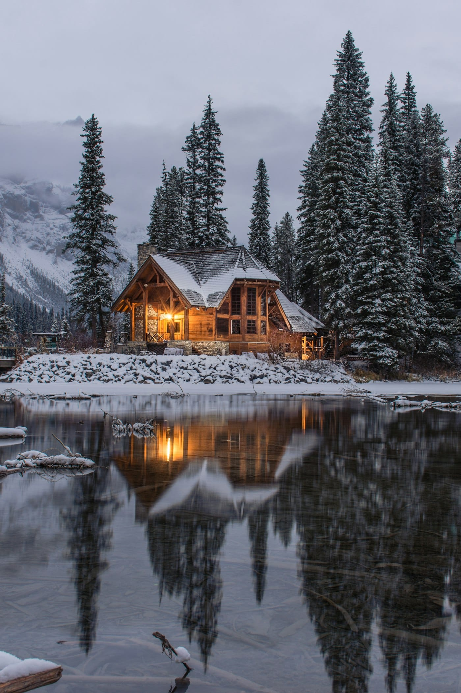
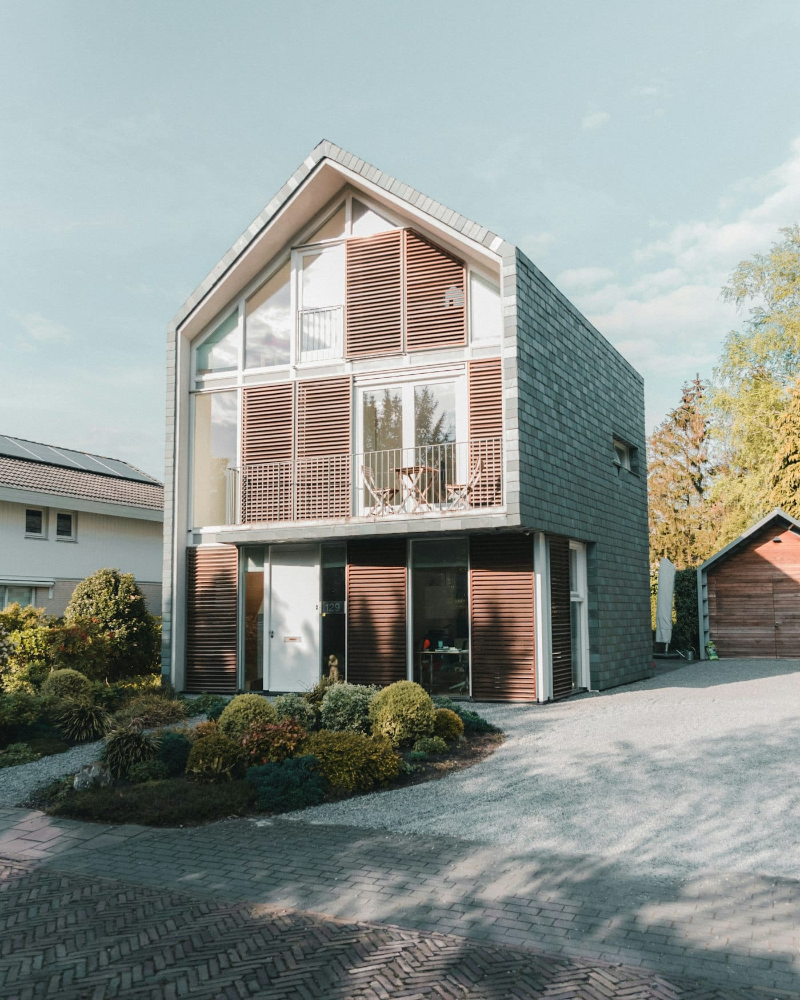

Дома у воды

Дом «Ель»
2 спальни · камин · терраса · до 4 гостей
9 800 ₽за ночь

Дом «Берёза»
3 спальни · баня · мангал · до 6 гостей
14 500 ₽за ночь
Дом «Скала»
1 спальня · сауна · вид на озеро · до 2 гостей
7 400 ₽за ночь
Что рядом с домом
Лодки и сапборды входят в проживание. Рыбалка с проводником, лыжная трасса зимой и ресторан с карельской кухней в двух километрах.
40 мот дома до воды
6 домовна 14 гектарах
3 чот Санкт-Петербурга
0соседей в зоне видимости